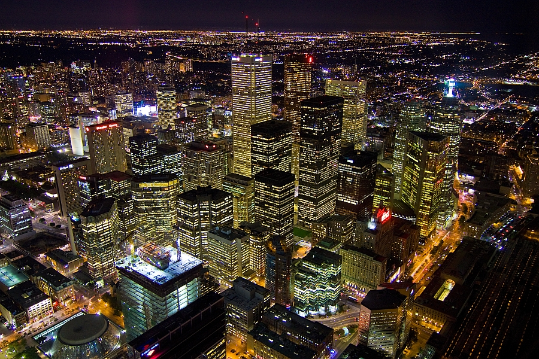
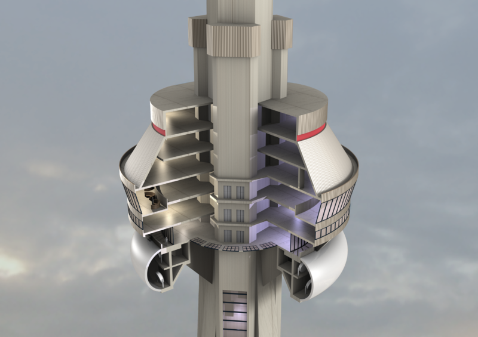

Introduction
The CN Tower (French: Tour CN) is a 553.33 m-high (1,815.4 ft) concrete communications and observation tower in Downtown Toronto, Ontario, Canada. It was completed in 1976, becoming the world's tallest free-standing structure and world's tallest tower at the time. It held both records for 34 years until the completion of Burj Khalifa and Canton Tower in 2010. It remains the tallest free-standing structure in the Western Hemisphere, a signature icon of Toronto's skyline, and a symbol of Canada, attracting more than two million international visitors annually.
Its name "CN" originally referred to Canadian National, the railway company that built the tower. Following the railway's decision to divest non-core freight railway assets, prior to the company's privatization in 1995, it transferred the tower to the Canada Lands Company, a federal Crown corporation responsible for real estate development. Since the name CN Tower became common in daily usage, the abbreviation was eventually expanded to Canadian National Tower or Canada's National Tower. However, neither of these names is commonly used.
In 1995, the CN Tower was declared one of the modern Seven Wonders of the World by the American Society of Civil Engineers. It also belongs to the World Federation of Great Towers, where it holds second-place ranking.
History
The idea of the CN Tower originated in 1968 when the Canadian National Railway had a desire to build a large TV and radio communication platform to serve the Toronto area, as well as demonstrate the strength of Canadian industry and CN in particular. These plans evolved over the next few years, and the project became official in 1972. The tower would have been part of Metro Centre (see CityPlace), a large development south of Front Street on the Railway Lands, a large railway switching yard that was being made redundant by newer yards outside the city. Key project team members were NCK Engineering as structural engineer; John Andrews Architects; Webb, Zerafa, Menkes, Housden Architects; Foundation Building Construction; and Canron (Eastern Structural Division). At the time, Toronto was a boom town, and the late 1960s and early 1970s had seen the construction of numerous large skyscrapers in the downtown core, most notably First Canadian Place. This made broadcasting into the downtown area very difficult due to reflections off the buildings. The only solution was to raise the antennas above the buildings, demanding a tower over 300 m (980 ft) tall. Additionally, at the time, most data communications took place over point-to-point microwave links, whose dish antennae covered the roofs of large buildings. As each new skyscraper was added to the downtown, former line-of-sight links were no longer possible. CN intended to rent "hub" space for microwave links, visible from almost any building in the Toronto area. The CN Tower can be seen from at least as far away as Kennedy Street in Aurora, Ontario, approximately 40 km (25 mi) to the north, 60 km (37 mi) east of Toronto, in Oshawa, and from several points on the south shore of Lake Ontario, 48 km (30 mi) to the south in New York state in the United States.
The original plan for the tower envisioned a tripod consisting of three independent cylindrical "pillars" linked at various heights by structural bridges. Had it been built, this design would have been considerably shorter, with the metal antenna located roughly where the concrete section between the main level and the SkyPod lies today. As the design effort continued, it evolved into the current design with a single continuous hexagonal core to the SkyPod, with three support legs blended into the hexagon below the main level, forming a large Y-shape structure at the ground level.
The idea for the main level in its current form evolved around this time, but the Space Deck (now named SkyPod) was not part of the plans until some time later. One engineer in particular felt that visitors would feel the higher observation deck would be worth paying extra for, and the costs in terms of construction were not prohibitive. It was also some time around this point that it was realized that the tower could become the world's tallest structure, and plans were changed to incorporate subtle modifications throughout the structure to this end.
Construction on the CN Tower began on February 6, 1973 with massive excavations at the tower base for the foundation. By the time the foundation was complete, 56,000 t (61,729 short tons; 55,116 long tons) of dirt and shale were removed to a depth of 15 m (49.2 ft) in the centre, and a base incorporating 7,000 m3 (9,156 cu yd) of concrete with 450 t (496 short tons; 443 long tons) of rebar and 36 t (40 short tons; 35 long tons) of steel cable had been built to a thickness of 6.7 m (22.0 ft). This portion of the construction was fairly rapid, with only four months needed between the start and the foundation being ready for construction on top.
To build the main support pillar, a hydraulically-raised slipform was built at the base. This was a fairly impressive engineering feat on its own, consisting of a large metal platform that raised itself on jacks at about 6 m (19.7 ft) per day as the concrete below set. Concrete was poured continuously by a team of 1,532 people until February 22, 1974, during which it had already become the tallest structure in Canada, surpassing the recently built Inco Superstack, which was built using similar methods. In total, the tower contains 40,500 m3 (52,972 cu yd) of concrete, all of which was mixed on-site in order to ensure batch consistency. Through the pour, the vertical accuracy of the tower was maintained by comparing the slip form's location to massive plumb-bobs hanging from it, observed by small telescopes from the ground. Over the height of the tower, it varies from true vertical accuracy by only 29 mm (1.1 in).
In August 1974, construction of the main level commenced. Using 45 hydraulic jacks attached to cables strung from a temporary steel crown anchored to the top of the tower, twelve giant steel and wooden bracket forms were slowly raised, ultimately taking about a week to crawl up to their final position. These forms were used to create the brackets that support the main level, as well as a base for the construction of the main level itself. The Space Deck (currently named SkyPod) was built of concrete poured into a wooden frame attached to rebar at the lower level deck, and then reinforced with a large steel compression band around the outside.
The antenna was originally to be raised by crane as well, but during construction the Sikorsky S-64 Skycrane helicopter became available when the United States Army sold off theirs to civilian operators. The helicopter, named "Olga", was first used to remove the crane, and then flew the antenna up in 36 sections. The flights of the antenna pieces were a minor tourist attraction of their own, and the schedule was printed in the local newspapers. Use of the helicopter saved months of construction time, with this phase taking only three and a half weeks instead of the planned six months. The tower was topped off on April 2, 1975 after 26 months of construction, officially capturing the height record from Moscow's Ostankino Tower, and bringing the total mass to 118,000 t (130,073 short tons; 116,136 long tons).
Two years into the construction, plans for Metro Centre were scrapped, leaving the tower isolated on the Railway Lands in what was then a largely abandoned light-industrial space. This caused serious problems for tourists to access the tower. Ned Baldwin, project architect with John Andrews, wrote at the time that "All of the logic which dictated the design of the lower accommodation has been upset," and that "Under such ludicrous circumstances Canadian National would hardly have chosen this location to build.” The CN Tower opened to the public on June 26, 1976, although the official opening date was October 1, 1976. The construction costs of approximately CDN$63 million ($243 million in 2013 dollars) were repaid in fifteen years. Canadian National Railway sold the tower prior to taking the company private in 1995, when they decided to divest themselves of all operations not directly related to their core freight shipping businesses.
From the mid-1970s to the mid-1980s, the CN Tower was practically the only development along Front Street West; it was still possible to see Lake Ontario from the foot of the Tower due to the expansive parking lots and lack of development in the area at the time. As the area around the tower was developed, particularly with the introduction of the Metro Toronto Convention Centre in 1984 and the SkyDome in 1989 (renamed Rogers Centre in 2005), the former Railway Lands were redeveloped and the tower became the centre of a newly developing entertainment area. Access was greatly improved with the construction of the SkyWalk in 1989, which connected the tower and SkyDome to the nearby railway and subway station, Union Station and, in turn, to the city's PATH underground pedestrian system. By the mid-1990s, it was the centre of a thriving tourist district. The entire area continues to be an area of intense building, notably a boom in condominium construction in the 2000s (decade) and the 2010s.
Structure
The CN Tower consists of several substructures. The main portion of the tower is a hollow concrete hexagonal pillar containing the stairwells and power and plumbing connections. The Tower's six elevators are located in the three inverted angles created by the Tower's hexagonal shape (two elevators per angle). Each of the three elevator shafts are lined with glass, allowing for views of the city as the glass-windowed elevators make their way up the Tower. The stairwell was originally located in one of these angles (the one facing north), but was moved into the central hollow of the Tower; the Tower's new fifth and sixth elevators were placed in the hexagonal angle that once contained the stairwell. On top of the main concrete portion of the Tower is a 102-metre (334.6 ft) tall metal broadcast antenna, carrying TV and radio signals. There are three visitor areas: the Glass Floor and Outdoor Observation Terrace which are both located at an elevation of 342 metres (1,122 ft), the Indoor Lookout Level (formerly known as "Indoor Observation Level") located at 346 metres (1,135 ft), and the higher SkyPod (formerly known as "Space Deck") at 446.5 metres (1,465 ft), just below the metal antenna. The hexagonal shape can be seen between the two areas; however, below the main deck, three large supporting legs give the tower the appearance of a large tripod. The main deck level is seven storeys, some of which are open to the public. Below the public areas — at 338 m (1,108.9 ft) — is a large white donut-shaped radome containing the structure's microwave receivers. The glass floor and outdoor observation deck are at 342 metres (1,122.0 ft). The glass floor has an area of 24 m2 (258 sq ft) and can withstand a pressure of 4,100 kilopascals (595 psi). The floor's thermal glass units are 64 mm (2.5 in) thick, consisting of a pane of 25-millimetre (1.0 in) laminated glass, 25 mm (1.0 in) airspace and a pane of 13 mm (0.5 in) laminated glass. Some people experience acrophobia when standing on the glass floor and looking down at the ground 342 m (1,122.0 ft) below. In 2008, one elevator was upgraded to add a glass floor panel, believed to have the highest vertical rise of any elevator equipped with this feature. The Horizons Cafe and the lookout level are at 346 metres (1,135.2 ft). The 360 Restaurant, a revolving restaurant that completes a full rotation once every 72 minutes, is at 351 m (1,151.6 ft). When the tower first opened, it also featured a disco named Sparkles, billed as the highest disco and dance floor in the world.
The SkyPod was once the highest public observation deck in the world until it was surpassed by the Shanghai World Financial Center in 2008. On a clear day, it is possible to see up to 100 to 120 km (62 to 75 mi) away, to the city of Rochester across Lake Ontario in the United States, the mist rising from Niagara Falls, or the shores of Lake Simcoe. A metal staircase reaches the main deck level after 1,776 steps. and the SkyPod 100 m (328 ft) above after 2,579 steps; it is the tallest metal staircase on Earth. These stairs are intended for emergency use only and are not open to the public, except for two times per year for charity stair-climb events. Citing as evidence of one of the climbs, the WWF's 18th annual event: The average climber takes approximately 30 minutes to climb to the base of the radome, but the fastest climb on record is 7 minutes and 52 seconds in 1989 by Brendan Keenoy, an Ontario Provincial Police Officer. In 2002, Canadian Olympian and Paralympic champion Jeff Adams climbed the stairs of the tower in a specially designed wheelchair. The stairs were originally on one of the three sides of the tower, with a glass view, but these were later replaced with the third elevator pair and the stairs were moved to the inside of the core. Top climbs on the new, windowless stairwell used since around 2003 have generally been over 10 minutes.
On August 1, 2011, the CN Tower opened the EdgeWalk, an amusement in which thrill-seekers can walk on and around the roof of the main pod of the tower at 356 m (1,168.0 ft), which is directly above the 360 Restaurant. It is the world's highest full-circle, hands-free walk. Visitors are tethered to an overhead rail system and walk around the edge of the CN Tower's main pod above the 360 Restaurant on a 1.5 m (4.9 ft) metal floor. The attraction is closed throughout the winter season and during periods of electrical storms and high winds. In August 2000, a fire broke out at the Ostankino Tower in Moscow. It killed three people and caused extensive damage. The fire was blamed on poor maintenance and outdated equipment. The failure of the fire-suppression systems and the lack of proper equipment for firefighters allowed the fire to destroy most of the interior and spark fears the tower might even collapse. The Ostankino Tower was completed nine years before the CN Tower, and is only 13 m (43 ft) shorter. The parallels between the towers led to some concern that the CN Tower could be at risk of a similar tragedy. However, Canadian officials subsequently stated that it is "highly unlikely" that a similar disaster could occur at the CN Tower, as it has important safeguards that were not present in the Ostankino Tower. Specifically, officials cited:
- the fireproof building materials used in the tower's construction
- frequent and stringent safety inspections,
- an extensive sprinkler system,
- a 24-hour emergency monitoring operation,
- two 68,160-litre (15,000-imperial gallon) water reservoirs at the top, which are automatically replenished,
- a fire hose at the base of the structure capable of sending 2725 litres (600 imperial gallons) a minute to any location in the tower,
- a ban on natural gas appliances anywhere in the tower (including the restaurant in the main pod),
- an elevator that can be used during a fire as it runs up the outside of the building and can be powered by three emergency generators at the base of the structure (unlike the elevator at the Ostankino tower, which malfunctioned).
Officials also noted that the CN Tower has an excellent safety record and that there has never been an accidental fire in the tower since it was opened in 1976. Moreover, other supertall structures built between 1967 and 1976 — such as the Willis Tower (formerly the Sears Tower), the World Trade Center (until its destruction on September 11, 2001), the Fernsehturm Berlin, the Aon Center, the John Hancock Center, and First Canadian Place — also have excellent safety records, which suggests that the Ostankino Tower accident was a rare safety failure, and that the likelihood of similar events occurring at other supertall structures is extremely low.
Lighting
The CN Tower was originally lit at night with incandescent lights, but they were removed in 1997, because they were inefficient and expensive to repair. In June 2007, the tower was outfitted with 1,330 super-bright LED lights inside the elevator shafts, shooting up over the main pod and upward to the top of the tower's mast to light the tower from dusk until 2 a.m. The official opening ceremony took place on June 28 before the Canada Day holiday weekend.
The tower changes its lighting scheme on holidays and to commemorate major events. After the 95th Grey Cup in Toronto, the tower was lit up in green and white to represent the colours of the Grey Cup champion Saskatchewan Roughriders. From sundown on August 27, 2011 to sunrise the following day, the tower was lit in orange, the official colour of the New Democratic Party, to commemorate the death of federal NDP leader Jack Layton.
Programmed from a desktop computer with a wireless network interface controller, the LEDs use less energy to light than the previously used incandescent lights (10% less energy than the dimly lit version and 60% less than the brightly lit version). The estimated cost to use the LEDs is $1,000 per month.
During the spring and autumn bird migration seasons, the lights will be turned off to comply with the voluntary Fatal Light Awareness Program, which "encourages buildings to dim unnecessary exterior lighting to mitigate bird mortality during spring and summer migration.
Controversy
Guinness World Records has called the CN Tower "the world's tallest self-supporting tower" and "the world's tallest free-standing tower". Although Guinness did list this description of the CN Tower under the heading "tallest building" at least once, it has also listed it under "tallest tower", omitting it from its list of "tallest buildings." In 1996, Guinness changed the tower's classification to "World's Tallest Building and Freestanding Structure". Emporis and the Council on Tall Buildings and Urban Habitat both listed the CN Tower as the world's tallest free-standing structure on land, and specifically state that the CN Tower is not a true building, thereby awarding the title of world's tallest building to Taipei 101, which is 44 metres (144 ft) shorter than the CN Tower. The issue of what was tallest became moot when Burj Khalifa, then under construction, exceeded the height of the CN Tower in 2007 (see below).
Although the CN Tower contains a restaurant, a gift shop, and multiple observation levels, it does not have floors continuously from the ground, and therefore it is not considered a building by the Council on Tall Buildings and Urban Habitat (CTBUH) or Emporis. CTBUH defines a building as "a structure that is designed for residential, business, or manufacturing purposes. An essential characteristic of a building is that it has floors." The CN Tower and other similar structures — such as the Ostankino Tower in Moscow, Russia; the Oriental Pearl Tower in Shanghai, China; the Stratosphere Tower in Las Vegas, Nevada; and the Eiffel Tower in Paris, France — are categorized as "towers", which are free-standing structures that may have observation decks and a few other habitable levels, but do not have floors from the ground up. The CN Tower was the tallest tower by this definition, until 2010 (see below).
Taller than the CN Tower are numerous radio masts and towers, which are held in place by guy-wires, the tallest being the KVLY-TV mast in North Dakota at 628 metres (2,060 ft) tall, leading to a distinction between these and "free-standing" structures. Additionally, the Petronius Platform stands 610 metres (2,001 ft) above its base on the bottom of the Gulf of Mexico, but only the top 75 metres (246 ft) of this oil and natural gas platform are above water, and the structure is thus partially supported by its buoyancy. Like the CN Tower, none of these taller structures are commonly considered buildings.
On September 12, 2007, Burj Khalifa, which is a hotel, residential and commercial building in Dubai, United Arab Emirates, and was formerly known as Burj Dubai, passed the CN Tower's 553.33 metre height. The CN Tower held the record of tallest free-standing structure on land for over 30 years.
After Burj Khalifa had been formally recognized by the Guinness Book of World Records as the world's tallest freestanding structure, Guinness re-certified CN Tower as the world's tallest freestanding tower. The tower definition used by Guinness was defined by the Council on Tall Buildings and Urban Habitat as 'a building in which less than 50% of the construction is usable floor space'. Guinness World Records editor-in-chief Craig Glenday announced that Burj Khalifa was not classified as a tower because it has too much usable floor space to be considered to be a tower. CN Tower still held world records for highest above ground wine cellar (in 360 Restaurant) at 351 metres, highest above ground restaurant at 346 metres (Horizons Restaurant), and tallest free-standing concrete tower during Guinness's recertification. The CN Tower was surpassed by the Canton Tower in Guangzhou, China, which stands at 600 m tall, as the world's tallest tower, in 2010. The tower, as of 2012, stands as the fifth-tallest free-standing structure on land in the world and the third-tallest free-standing tower.